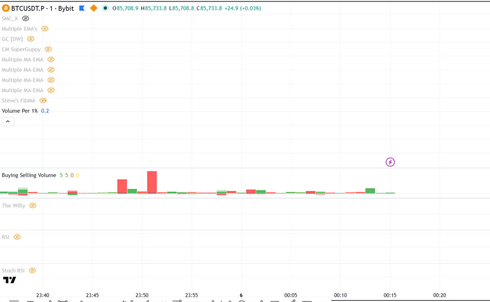
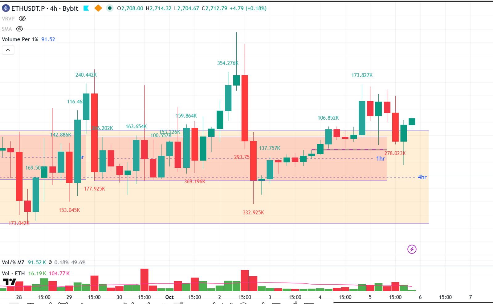
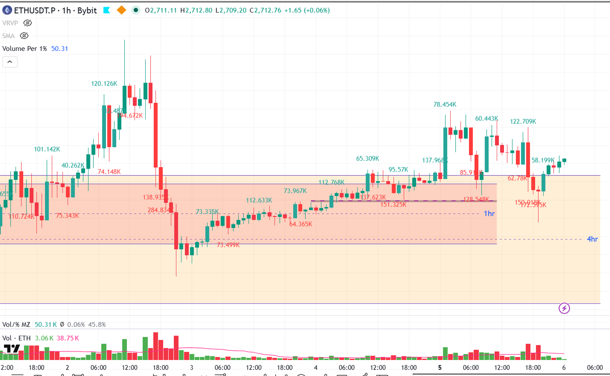
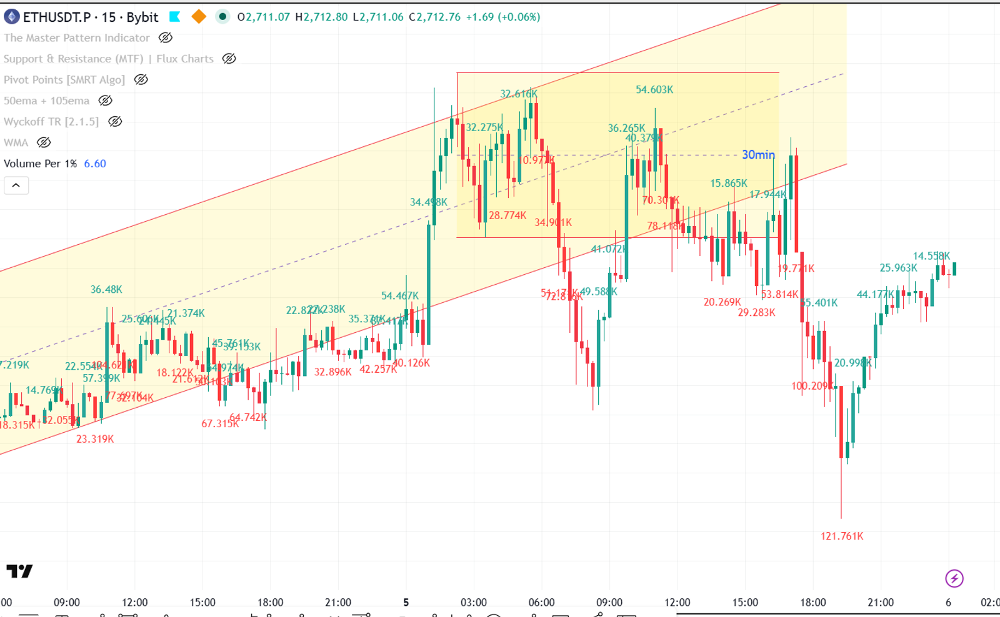

ETHUSDT.P נמצא כרגע בטווח מסחר (TR) ב-Daily, עם סימנים של חולשה דובית מתפתחת בטווחי הזמן הנמוכים יותר. התנועה הנוכחית נראית כמו תיקון בתוך מגמה יורדת רחבה יותר, עם פוטנציאל להמשך ירידות לאחר בדיקה של רמות תמיכה.
כסף חכם: מוכרים שולטים — הלחץ הדובי נראה בבירור ב-4H ו-1H, עם סימנים לחולשה ב-Daily.
פעולה מומלצת: חכה / הימנע מסחר — אין כרגע סיגנל כניסה ברור או תמיכה מה-HTF.
בעוד שה-Daily מראה תנועה יחסית יציבה בתוך טווח, ה-4H וה-1H מציגים מבנה דובי ברור יותר עם סימנים לחולשה. ה-15m מנסה להראות סיגנל היפוך קצר, אך ללא אישור מהטווחי זמן הגבוהים יותר, הוא נחשב פחות אמין.
החלטה: יש להמתין לאישור מה-Daily או להתמקד בטווחי זמן נמוכים יותר רק לאחר שה-HTF יתיישר. בינתיים, עדיף להימנע מסחר.

TR מזוהה: 2648 (SC) → 2777.83 (TR.">AR)
מבנה: TR — השוק נע בטווח מסחר יחסית רחב.
פאזה כללית: Phase B (הסבר טקסטואלי בלבד — לא מסומן על הגרף)
קריאה: Bearish × בינוני
V/1% baseline: 440484.3
| תאריך | סוג נר | V/1% | יחס ל-baseline | משמעות |
|---|---|---|---|---|
| 2026-10-01 | נר ירידה | 1473097.8 | 3.34x | גבוה משמעותית, תחילת לחץ מכירה |
| 2026-10-02 | נר ירידה | 1168977.2 | 2.65x | גבוה משמעותית, סימן לחולשה בגג |
| 2026-10-05 | נר ירידה/דשדוש | 1770809.9 | 4.02x | Climactic, חוסר החלטיות/ספיגה |
📌 baseline = V/1% של ה-BC daily. נרות > פי 2 מ-baseline = climactic.
הגל האחרון (5 באוקטובר) הציג ווליום גבוה (V/1% של 1,770,809), אך המחיר נסגר באמצע הטווח (2712.91), מה שמעיד על מאמץ גבוה ללא תוצאה ברורה בכיוון אחד.
אבחנה: Anomaly
📝 מסקנה יומי: ה-Daily מראה את ETHUSDT.P נע בתוך טווח מסחר, עם סימנים לחולשה בגג הטווח (וליום גבוה ללא התקדמות משמעותית). הפאזה הנוכחית היא Phase B, והיעדר התקדמות ברורה מצביע על פוטנציאל להמשך דשדוש או תחילת תנועה דובית אם יתגלה לחץ מכירה חזק יותר.

TR (אם שונה מ-יומי): 2677.7 → 2733.88
תאימות ל-יומי: ה-4H משקף את הטווח היומי, אך מראה יותר תנודתיות פנימית.
קריאה: Bearish × בינוני
גל עליה אחרון vs גל ירידה אחרון: גלי הירידה האחרונים (לדוגמה, סביב ה-5 באוקטובר) מציגים ווליום גבוה יותר וטווחים רחבים יותר מאשר גלי העלייה, מה שמצביע על שליטה דובית.
| תאריך/שעה | סוג נר | V/1% | יחס ל-baseline | משמעות |
|---|---|---|---|---|
| 2026-10-05T04:00 | נר ירידה | 507704.9 | 1.00x | גבוה, תקין ל-Phase B |
| 2026-10-05T12:00 | נר דשדוש/ירידה | 278023.1 | 0.55x | נמוך, חוסר עניין בירידה? |
| 2026-10-05T16:00 | נר עליה | 323043.3 | 0.64x | נמוך, חוסר עניין בעליה? |
הנר מ-2026-10-05T16:00 הראה ווליום נמוך יחסית (0.64x baseline) אך טווח רחב יחסית, מה שמצביע על מאמץ נמוך ותוצאה בינונית. זה לא אישור חזק לאף כיוון.
אבחנה: Anomaly
📝 מסקנה 4H: ה-4H מראה שהשוק נמצא בתוך הטווח היומי, אך עם תנודתיות גבוהה יותר. גלי הירידה האחרונים נראים חזקים יותר מגלי העלייה, מה שמצביע על לחץ דובי מתגבר. הפאזה היא כנראה Phase B או תחילת Phase C.

אירוע נוכחי: TR בתוך הטווח היומי, עם סימנים לחולשה.
Significant Bar אחרון: הנר מ-2026-10-05T18:00 (2704.3-2709.6) הציג ווליום גבוה (23,685) וטווח רחב, אך נסגר באמצע, מה שמצביע על מאבק.
SMC structure: BOS/CHOCH אחרון — אין BOS ברור בכיוון עלייה, אך יש סימנים ל-CHOCH דובי קצר.
קריאה: Bearish × נמוך
| תאריך/שעה | סוג נר | V/1% | יחס ל-baseline | משמעות |
|---|---|---|---|---|
| 2026-10-05T18:00 | נר דשדוש | 137746 | 2.74x | גבוה, סימן למאבק |
| 2026-10-05T19:00 | נר דשדוש | 310306.2 | 6.17x | Climactic, חוסר החלטיות/ספיגה |
| 2026-10-05T20:00 | נר עליה | 114365.4 | 2.28x | גבוה, תחילת לחץ מכירה? |
הנר מ-2026-10-05T20:00 הציג ווליום גבוה (2.28x baseline) אך נסגר בטווח בינוני, ללא התקדמות משמעותית. זה מצביע על מאמץ ללא תוצאה ברורה.
אבחנה: Anomaly
📝 מסקנה 1H: ה-1H מראה תמונה של דשדוש בתוך הטווח, עם לחץ מכירה שמורגש בגג הטווח. אין סיגנל חזק לכניסה בכיוון כלשהו, והתנודתיות הגבוהה מצביעה על חוסר החלטיות או מאבק בין הקונים למוכרים.

סטאפ type: חכה / הימנע מסחר
QM Pattern: לא מזוהה QM ברור ב-15m.
QML.">MPL level: N/A
סה"כ: 0/8 → חכה / הימנע מסחר
תנאי הפעלה: אם ה-Daily יראה סימן ברור לחזרה למעלה (למשל, פריצת גג ה-TR) או אם ה-4H/1H יציגו סיגנל Spring ברור עם אישור ווליום.
Entry / SL / TP: במקרה כזה, נחפש כניסה לאחר Test מוצלח של רמת התמיכה החדשה, עם SL מתחת לרמת ה-Spring/Support.
הניתוח מבוטל אם:
טריגר: אין טריגר Primary כרגע.
Entry: N/A
SL: N/A (N/A) (N/A)
TP1: N/A (R:R N/A)
TP2: N/A (R:R N/A)
מה ה-הכסף החכם עושה כרגע: מוכרים שולטים
ראיות:
מה ה-הכסף החכם ינסה לעשות הלאה: ינסה כנראה לבחון את רמות התמיכה של הטווח (סביב 2648) ואולי אף לשבור אותן אם הלחץ הדובי יתחזק.